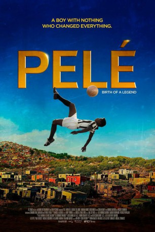

#8132 Pelé: Birth of a Legend
Alternativ: Pele
 
 IMDB-Wertung: 7.3 / 10
IMDB-Wertung: 7.3 / 10  Metascore: 0
Metascore: 0 
Die wahre Geschichte eines kleinen Straßenjungen der die Welt zum Träumen brachte! Edson Arantes do Nascimento, Pelé genannt, wächst in ärmlichen Verhältnissen auf. Unermüdlich kickt er mit seinen Freunden alles, was Ähnlichkeit mit einem Ball hat, durch die Straßen und Hinterhöfe. Er schafft es sogar ins Endspiel eines lokalen Turniers, wo einem Fußballscout das Ballgefühl auffällt. Damit beginnt ein steiler Aufstieg, der 1958 den 17jährigen ins WM-Endspiel katapultiert. Sein eigenwilliger Stil erntet oft Kritik, doch der Nationaltrainer erkennt, dass er diesem Talent freie Hand lassen muss. Als jüngster Spieler aller Zeiten schießt Pelé die Brasilianer zum Titel und wird zur Legende.
Jahr: 2016
Dauer: 107 Minuten
FSK: 6
Land: USA Studio: IFC FilmsTonspuren: DTS - ,
Untertitel:
Auflösung: 1080p (1920x792) Größe: 5611 MB
Genre: Drama, Sport, Biographie
Regisseur: Jeff Zimbalist, Michael Zimbalist
Drehbuch: Jeff Zimbalist
Soundtrack: A.R. Rahman
Darsteller:
- Leonardo Lima Carvalho als Younger Pele
- Seu Jorge als Dondinho
- Mariana Nunes als Celeste Arantes (Pele's Mother)
- Milton Gonçalves als Waldemar de Brito
- Seth Michaels als Mario Zagallo
 Vincent D'Onofrio als Feola
Vincent D'Onofrio als Feola- André Mattos als Santos club's coach
- Phil Miler als Narrator
- Felipe Simas als Garrincha
- Eric Bell Jr. als Zoca
 Diego Boneta als Jose
Diego Boneta als Jose- Tonya Cornelisse als Swedish Girl
- Vivi Devereaux als Austin Smith
- Garcia Júnior als Assistant Coach
 Colm Meaney als George Raynor
Colm Meaney als George Raynor- Ivan Orlic als Spanish Announcer
- Pelé als Man Sitting in Hotel Lobby
 Rodrigo Santoro als
Rodrigo Santoro als - Brandon Wilson als Pelé (Voice)
- Kevin de Paula als Pele
- Rafael Henriques als Yuri (14 year old)
- Mariana Balsa als Lucia
- Fernando Caruso als Zito
- Jon Cotterill als British Commentator
- Thelmo Fernandes als
- Jerome Franz als French Announcer
- Roger Haag als German Announcer
- Sven Holmberg als
- Arthur Jansen als Dutch Announcer / Swedish Announcer
- Julio Levy als
- Charles Myara als Doctor Gosling
Datei: X:\2016(N-Z)\Pelé Birth of a Legend (2016, FSK6, 1920x792).mkv seit 30.01.2018
Festplatte: HD 2016(A-Z)
 Es gibt insgesamt 182 Filme in der Gruppe '2016(N-Z)'
Es gibt insgesamt 182 Filme in der Gruppe '2016(N-Z)'